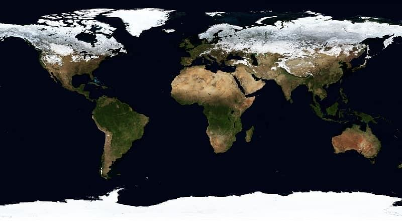

ANTÁRTIDA |
|
| La Antártida, Antártica2 o continente antártico (del adjetivo latino antarcticus, y este a su vez del griego ανταρκτικός antarktikós, ‘opuesto al Ártico’), es el continente más austral de la Tierra. Está situada completamente en el hemisferio sur, casi enteramente al sur del círculo polar antártico y está rodeada por el océano Antártico. Contiene el polo sur geográfico, por lo que de manera coloquial y por extensión también es conocida como el polo sur. Con 14 000 000 km², es el cuarto continente más grande después de Asia, América y África.1 En comparación con Oceanía, la Antártida es casi dos veces su tamaño. Alrededor del 98 % de la Antártida está cubierta de hielo, que tiene un promedio de 1,9 km de espesor,3 que se extiende a todos los puertos, excepto a los más septentrionales de la península Antártica. | |
|  | |